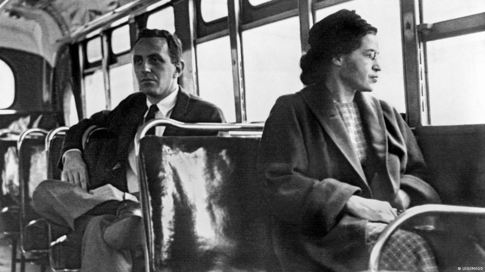

Rosa Parks
Rosa Parks
Mulheres que fazem a diferença

Rosa Louise McCauley, mais conhecida por Rosa Parks foi uma ativista negra norte-americana, símbolo do movimento dos direitos civis dos negros nos Estados Unidos. Ficou famosa, em 1º de dezembro de 1955, por ter-se recusado frontalmente a ceder o seu lugar no ônibus a um homem branco, tornando-se o estopim do movimento que foi denominado boicote aos ônibus de Montgomery e posteriormente viria a marcar o início da luta antissegregacionista.
Inicio da luta contra o racismo
Rosa Parks teve convicção, princípios e ideias para defender. Corajosa, justa e determinada, ela lutou corpo e alma contra a desigualdade racial nos Estados Unidos.
Prisão de Rosa Parks inicia a luta pelos direitos civis
"Quando fui presa, eu não sabia o que iria gerar. Foi apenas um dia como outro qualquer. O que mudou as coisas, são todas as pessoas que aderiram ao movimento. "
Rosa Parks faleceu no dia 24 de outubro de 2005, aos 92 anos de idade. Ela recebeu inúmeras homenagens ao longo de sua vida (e após a sua morte) por seu papel na luta contra o racismo.